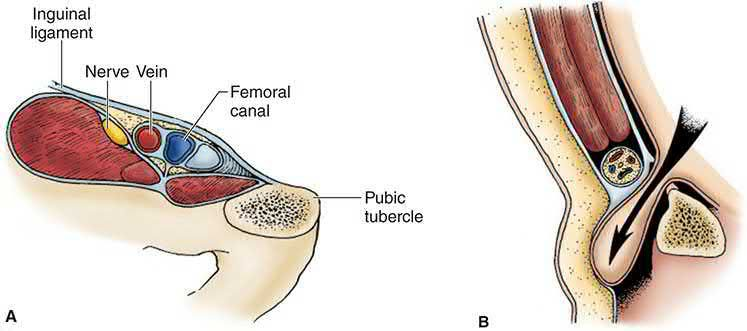
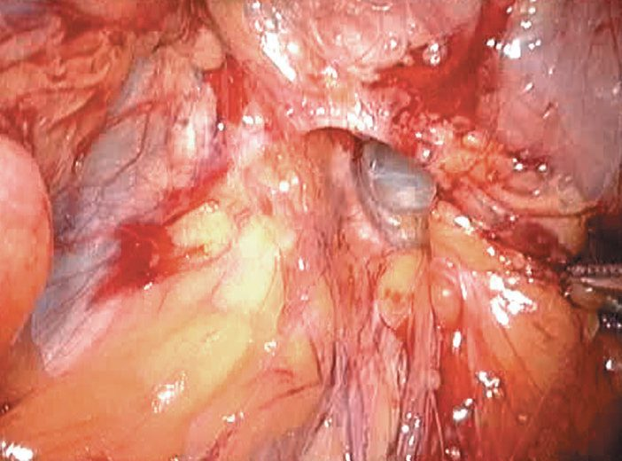
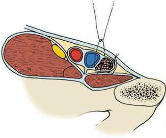
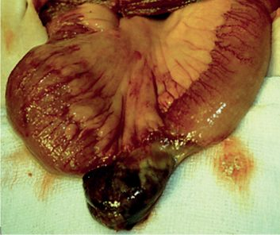

Femoral Hernia
Summary
- Femoral hernia is the second most common groin hernia, accounting for only 5-10% of all groin hernias, but it carries a disproportionately high risk of incarceration and strangulation because of its rigid, narrow-necked anatomical boundaries [1][2].
- It is far more common in women than men (approximately 4:1), yet even in women the inguinal hernia remains the more frequent groin hernia overall [1][3][4].
- Because femoral hernias have essentially no scope for expansion and a very high rate of strangulation, all femoral hernias should be repaired once diagnosed, and watchful waiting (safe for a minimally symptomatic inguinal hernia) is explicitly not an option here [2][5][6].
There is no NICE guideline covering femoral hernia: the NICE clinical guideline on hernia was deferred in June 2015 and discontinued on 21 February 2018 [7]. UK practice rests on the RCS/ASGBI/British Hernia Society groin hernia commissioning guide, which treats the femoral hernia as a distinct entry point in the referral pathway rather than a variant of inguinal hernia: the primary-care flow diagram routes a femoral hernia directly to a surgeon who performs both open and laparoscopic repair, bypassing generic referral entirely [8].
Definition
A femoral hernia is protrusion of abdominal or extraperitoneal contents through the femoral canal, the potential space medial to the femoral vein within the femoral sheath, below the inguinal ligament [2][5]. More precisely it is a protrusion of extraperitoneal fat, a peritoneal sac, and sometimes abdominal contents through that canal [4].
Pathophysiology
The femoral canal
- The femoral canal lies medial to the femoral vein and contains loose areolar tissue and a lymph node (the node of Cloquet).
- Its boundaries are the inguinal ligament anteriorly, the pectineal (Cooper's) ligament and pubic ramus posteriorly, the femoral vein laterally, and the lacunar (Gimbernat's) ligament medially, a strong, curved, sharp-edged structure that impedes reduction of the hernia [1][2][4].
- The canal normally provides the space into which the femoral vein expands [4].
- Because these boundaries are ligamentous, bony, or vascular, the space cannot expand to accommodate herniated contents, so femoral hernias have an especially high propensity for incarceration and strangulation [1].
- With bone or ligament on three sides and a major vessel on the fourth, a peritoneal sac coming through it has a stiff, narrow neck, and any contents are at risk of strangulation [4].
- A common teaching point is wrong.
- Two anatomical misconceptions are widely propagated: that the medial border of the femoral canal is the lacunar ligament, and that the inguinal and lacunar ligaments are visible from the posterior wall.
- The medial border is in fact usually the triangular fascial extension of the iliopubic tract where it inserts into Cooper's ligament.
- The lacunar ligament forms the medial border only when a sizeable femoral hernia extends significantly medially.
- Once the iliopubic tract is taken into account, the femoral canal is smaller than the classical description implies, and it is that medial border of the iliopubic tract extension that is sometimes divided to reduce an incarcerated femoral hernia safely [9].
- The space between the inguinal ligament and the iliopubic tract medially serves as the floor of the inguinal canal and the ceiling of the femoral canal [9].

Why women, and why acquired
- The female pelvis has a wider, more obliquely oriented shape than the male pelvis, which increases the size of the femoral canal and the risk of herniation.
- The defect enlarges further with age, so femoral hernia is classically seen in thin, elderly women [1][2].
- Unlike the inguinal hernia, there is no embryological preformed sac in the femoral canal, so femoral hernia is very rarely of congenital origin (incidence in infancy and childhood is around 0.5%), and its predominance in middle-aged to older women reflects acquired loss of tissue strength and elasticity [1].
- Femoral hernias are rare in children and do not become common until over the age of 50, with no upper age limit [4].
The sac, and Richter's hernia
A characteristic but not invariable feature of the femoral sac is that it is thick-walled, with layers of fat and connective tissue that look like an onion when cut across; this means the sac remains palpable even when empty, so the hernia seems to be irreducible [4]. A Richter's hernia involves only part of the circumference of the bowel wall entering the defect; this can be difficult or impossible to detect clinically, may occur without overt bowel obstruction, and can still progress to necrosis and perforation, femoral hernias are particularly prone to presenting this way because of the narrow neck [2][4].
Clinical features
- A femoral hernia typically presents as a small bulge appearing below and lateral to the pubic tubercle, in the upper thigh rather than the lower abdomen, and is often difficult to reduce even at first presentation [1][2].
- As it enlarges it may curve superiorly over the inguinal ligament, making it difficult to distinguish from a direct inguinal hernia [2].
- Because of the tight neck, femoral hernias frequently lose any cough impulse and may be mistaken for an inguinal lymph node when small (1-2 cm) [2][5].
- Femoral hernia may present with symptoms of intermittent or complete small bowel obstruction, and all patients with unexplained small bowel obstruction should be carefully examined for a femoral hernia [2].
- The hernial orifices of any patient with intestinal obstruction must always be carefully examined, as the patient may not have noticed a small lump in the groin, this is particularly true of femoral hernias [4].
- Usually the patient discovers the swelling themselves; the other main presentation is in an elderly patient with obstruction or strangulation of a previously unnoticed hernia [4].
Examination findings
Because of the thick-walled sac, a femoral hernia can be seen and felt with the patient lying flat, and that position makes it easier to find the pubic tubercle and the related landmarks, the exact opposite of the standing-only rule for inguinal hernia [4]. A bulge discovered below the inguinal ligament should raise suspicion of a femoral hernia [9].
| Feature | Typical finding in femoral hernia |
|---|---|
| Position of neck | Below the inguinal ligament and lateral to the pubic tubercle |
| Relation to groin crease | Bulges directly behind the skin crease of the groin, whereas an inguinal hernia bulges above the crease |
| Colour and temperature | Normal, even when strangulated, the sac and superficial fascia camouflage the contents |
| Tenderness | Not usually tender unless strangulated |
| Shape and size | Almost spherical, neck not clearly definable; most are small |
| Direction of enlargement | Extends upwards towards the fold of the groin, because Scarpa's fascia attaches to the deep fascia of the thigh and blocks downward extension |
| Composition | Usually firm, being a thick-walled fatty sac; the peritoneal sac is small and either empty or containing omentum |
| Reducibility | The majority cannot be reduced, because most of the swelling is the sac itself |
| Cough impulse | Usually absent |
Table reformats the femoral hernia examination findings [4]. A small hernia in an obese patient is very difficult to feel, so particular care is needed when examining this region in a patient with intestinal obstruction [4]. Look for groin scars: femoral hernias develop through a natural defect but are sometimes seen after repair of an inguinal hernia [4].
Etiology
- Femoral hernia is considered an acquired condition related to loss of tissue strength and elasticity with age, rather than a congenital defect [1].
- Predisposing factors include female sex (from a proportionally wider pelvis and femoral canal, and possibly less bulky groin musculature or pelvic floor weakness from childbirth), advancing age, and prior inguinal hernia repair, which has been shown to be a risk factor for subsequent femoral hernia development [1][2][4].
- Femoral hernias are occasionally bilateral [4].
Diagnosis
- Diagnosis is usually clinical, but diagnostic error and delay are common because the hernia is easily missed on routine groin examination and may be mistaken for a lymph node, lipoma, saphena varix, femoral artery aneurysm, or psoas abscess [2][5].
- Diagnosis depends on the site of the lump, hence the importance of clearly defining its relations to the surrounding structures [4].
- Ultrasound or CT should be used when there is diagnostic uncertainty; in the emergency setting with bowel obstruction, a plain abdominal radiograph may show obstruction and CT is now commonly used both to exclude malignancy and to identify an obstructing femoral hernia missed clinically [2].
- Imaging helps differentiate an inguinal from a femoral hernia in clinically occult hernias, but significant operator variability mars the utility of ultrasonography for this purpose, and studies support MRI over ultrasound or CT for occult hernias [6].
- At open inguinal hernia repair, once the floor of the inguinal canal is opened the surgeon should specifically look for a femoral hernia, which if present will be found in the preperitoneal space medial to the femoral vein [9].
- At laparoscopic repair, the dissection between the external iliac vein and Cooper's ligament required for the critical view of the myopectineal orifice exists precisely to identify the femoral orifice and rule out a femoral hernia [9].
The full differential of a lump in the groin is: inguinal hernia, femoral hernia, enlarged lymph glands, saphena varix, ectopic testis, femoral aneurysm, hydrocele of the cord or of the canal of Nuck, lipoma of the cord, psoas bursa, and psoas abscess [4]. A blue-tinged bulge in the groin that disappears on lying down is likely to be a saphena varix, a dilation of the termination of the long saphenous vein or one of its major tributaries [10].
Two mimics that share the femoral presentation
A prevascular hernia is a rare variety of femoral hernia in which the femoral canal expands laterally under the inguinal ligament in front of the femoral artery and vein; it has a wide neck and a flattened wide sac bulging downwards and laterally, usually reduces, has a cough impulse, and rarely strangulates. It is difficult to repair by open techniques because the femoral vessels form the posterior wall of the defect [4].
- An obturator hernia protrudes through the obturator canal and makes up less than 1% of all hernias.
- Like the femoral hernia it typically affects elderly, thin women, in this case because of the triangular pelvis coupled with atrophy of the preperitoneal fat surrounding the obturator vessels, with COPD, chronic constipation and ascites as further risk factors [11].
- Because of its location it can be confused with either a femoral or an inguinal hernia, but when incarcerated it carries a high risk of strangulation with morbidity as high as 14%, partly reflecting diagnostic delay [11].
- The unique physical sign is the Howship-Romberg sign, pain in the anteromedial thigh, relieved by thigh flexion, caused by direct compression of the obturator nerve by the hernia contents [11].
- Unlike other hernias, the more common presenting feature is bowel obstruction, in up to 50%.
- The small sac is concealed among the adductor muscles and only very rarely produces a palpable mass, so the usual presentation is small bowel obstruction of unknown cause [4][11].
- Because the bony pelvis interferes, ultrasound is less useful than CT, and laparoscopy should be considered a diagnostic option [11].

The commissioning guide places all hernias in women in the urgent referral category, alongside irreducible and partially reducible inguinal hernias, the stated reason being the difficulty of excluding a femoral hernia clinically [8]. Suspected strangulation or obstruction is an emergency referral [8].
Where the textbooks recommend imaging on clinical uncertainty, the UK pathway is explicit that diagnostic imaging should not be arranged at primary care level. Imaging belongs in secondary care, where ultrasound is first-line and MRI is considered only if ultrasound is negative and groin pain persists [8].
Scoring and Severity
Under the European Hernia Society groin hernia classification, femoral hernias are denoted "F" alongside lateral (L) and medial (M) inguinal hernias, and are graded for primary/recurrent status and defect size in the same system used for inguinal hernia [2]. In the Nyhus classification, all femoral hernias are grouped as Type IIIC [3].
| Interval from diagnosis | Femoral hernia | Inguinal hernia |
|---|---|---|
| Within the first 3 months | Approximately 22% | 2.8% |
| By nearly 2 years | Approximately 45% | 4.5% |
Table reformats the reported cumulative probability of strangulation [1]. Up to 30-40% of femoral hernias present as emergencies, and around half of these require bowel resection for strangulation or ischaemia [1][5].
Treatment and Management
There is no non-operative alternative for femoral hernia: because of the high risk of strangulation, repair is mandatory once diagnosed and should be undertaken with some urgency, even when asymptomatic [1][2]. A truss has no role in management [5].
- The watchful-waiting evidence that supports conservative management of a minimally symptomatic inguinal hernia does not transfer here.
- Femoral hernias were excluded from the randomised watchful-waiting trials and typically warrant timely surgical repair given their greater risk of strangulation than inguinal hernias [9].
- Watchful waiting is explicitly not recommended for any femoral hernia because of the significant risk of a hernia accident, and it is also not an option for women, primarily because of the difficulty of accurately differentiating a femoral from an inguinal hernia on physical examination [6].
- The UK restriction on hernia surgery does not apply to femoral hernia, and reading it as though it does is the trap.
- The Evidence-Based Interventions guidance that permits watchful waiting is titled and scoped to minimally symptomatic inguinal hernia.
- Its coding block matches ICD-10 diagnosis codes `K40.2` and `K40.9` (bilateral and unilateral inguinal hernia without obstruction or gangrene) and it applies to elective activity only in adults aged 19 to 120 [12].
- Femoral hernia falls outside that definition entirely.
- The same guidance closes its recommendation with the sentence that makes the point clinically: "In women, all suspected groin hernias should be urgent referrals." [12].
The commissioning guide's primary-care flow diagram treats femoral hernia as its own branch, routing it (like bilateral and recurrent groin hernias) to a surgeon who performs both laparoscopic and open hernia repair rather than to a generic referral [8].
Surgeries
- Low approach (Lockwood), a transverse incision is made directly over the hernia.
- The sac is opened, contents reduced, and non-absorbable sutures placed between the inguinal ligament and the pectineal ligament.
- This is the simplest approach and can be done under local anaesthesia, but it provides no scope for bowel resection if the bowel proves non-viable, so it is reserved for elective, reducible hernias [2][5].
- Care must be taken to avoid an aberrant obturator artery (arising from the inferior epigastric artery), which may run just deep to the lacunar ligament and bleed if incised [1][2].
- The corresponding laparoscopic hazard is the corona mortis, the circular connection formed where the accessory obturator vein (and sometimes an artery) crosses the pubic rim to join the obturator and inferior epigastric vessels [9].
- Inguinal approach (Lotheissen), entry is as for an inguinal hernia repair.
- The transversalis fascia is opened from the deep ring to the pubic tubercle, gaining access to the extraperitoneal space from which the hernia can be reduced by combined traction from above and pressure from below.
- The defect is then closed with sutures, a mesh plug, or a flat mesh in the extraperitoneal plane [2][5].
- Cooper's ligament (McVay) repair, the transversalis fascia is opened, Cooper's ligament exposed, and the transversalis fascia sutured to Cooper's ligament medially and then to the femoral sheath, closing the femoral canal.
- Laterally, a transition stitch continues the repair to the iliopubic tract, tightening the internal ring.
- A relaxing incision in the anterior rectus sheath is typically required to reduce tension.
- This is the technique of choice for femoral hernia when prosthetic material is contraindicated, and is the only pure tissue repair that definitively addresses both inguinal and femoral defects [1][3][13].
- It is described as particularly well suited to the strangulated femoral hernia precisely because it obliterates the femoral space without needing mesh, and the transition suture incorporating Cooper's ligament and the iliopubic tract is the step that makes it effective for femoral repair [9].
- High approach (McEvedy/Nyhus modification/Henry), McEvedy's original paramedian incision is now usually replaced by the Nyhus modification, a transverse incision above the inguinal canal at the lateral border of rectus.
- The surgeon dissects deep to the anterior rectus sheath into the preperitoneal space to reduce the hernia and inspect the bowel.
- This "open posterior" approach is ideal for emergency presentations because it allows a generous view of the bowel and facilitates resection if needed, unlike the low approach.
- The Henry modification allows bilateral femoral hernias to be repaired through a single midline preperitoneal incision [2][5].
- The open preperitoneal approach in general is beneficial for recurrent inguinal, sliding, femoral and selected strangulated hernias; for femoral hernias repaired this way, closure of the femoral canal is achieved by securing the repair to Cooper's ligament, with mesh commonly used to obliterate the defect in larger hernias [9].
Mesh plug repair (Lichtenstein), a plug of mesh is placed from cephalad to caudad to occlude the femoral defect, promoting scar formation; reported to give excellent results with low recurrence and to be technically simpler and safer than suture-based closure near the femoral vein [1]. In a standard open Lichtenstein inguinal repair, an additional suture between the posterior surface of the mesh and Cooper's ligament is used to secure any concomitant femoral hernia found at operation [6].
- Laparoscopic repair (TEP/TAPP), as for inguinal hernia, a large mesh is placed in the preperitoneal plane covering the entire myopectineal orifice, including the femoral space.
- A large Danish cohort of nearly 4,000 femoral hernia repairs found laparoscopic repair was associated with lower rates of reoperation for recurrence and lower rates of subsequent inguinal hernia at the same site than open repair, with similar rates of chronic pain, making laparoscopic repair the preferred approach where expertise allows [1].
- Laparoscopic repair is particularly recommended in women, in whom open exploration has a higher rate of early "recurrence" that in fact reflects a missed or misdiagnosed femoral hernia [2].
- Recent guidelines suggest a minimally invasive TEP or TAPP technique is preferred for femoral hernias, and is also recommended for women given their higher incidence of femoral hernia [9].
- Stoppa's giant prosthetic reinforcement of the visceral sac makes the same point from the other direction: overlap of the myopectineal orifice is so extensive that the type of hernia repaired (direct, indirect or femoral) becomes irrelevant [6].
- Repair of an obturator hernia, a minimally invasive approach is preferred because visualisation is much better than with open repair, and the setup mirrors an inguinal or femoral repair with three trocars in a line at the umbilicus and steep Trendelenburg.
- Inguinal and femoral hernias are reduced first, then the obturator contents, taking great care to avoid the obturator vessels and nerve including with cautery.
- Where there is no contamination or need for bowel resection, mesh is placed in the space of Retzius covering the defect by roughly 4 cm medially and 4 cm inferiorly and fixated to Cooper's ligament [11].
- If the contents will not reduce, an inferomedial incision in the membrane can enlarge the defect, avoiding the neurovascular bundle; where bowel resection is indicated most defects are closed with permanent interrupted or purse-string sutures [11].

Complications
- The femoral vein, lying immediately lateral to the hernia, must be protected during dissection and repair to avoid injury or inadvertent narrowing, which risks venous thrombosis [2][5].
- An aberrant obturator artery near the lacunar ligament is at risk during medial suture placement and can cause troublesome bleeding [2].
- Because the low (Lockwood) approach does not allow adequate access for bowel resection, unrecognised bowel non-viability is a risk of this approach if used inappropriately in emergency cases [2].
- Reduction en masse is a specific hazard of the narrow-necked hernia: it is possible to push a hernia back through the abdominal wall, apparently reducing it, without pushing the contents out of the sac, so contents that were strangulated before reduction remain strangulated afterwards.
- This is the reason never to push hard when attempting reduction [4].
- Because a Richter's hernia strangulates only part of the bowel circumference, it can necrose and perforate without ever causing intestinal obstruction, so the absence of obstructive symptoms does not exclude strangulation [2][4].
- As with inguinal hernia repair generally, recurrence and mesh-related complications may occur.
- A prophylactic antibiotic Cochrane review found no reduction in postoperative wound infection for elective open inguinal or femoral hernia repair in adults [9].

Prognosis
- Femoral hernia carries a substantially higher risk of strangulation than inguinal hernia at every time point after diagnosis, and mortality from strangulated femoral hernia correlates with delay in presentation and treatment [1].
- With prompt repair, outcomes are generally good; laparoscopic series report lower reoperation rates for recurrence than open repair [1].
- The one modifiable determinant is diagnostic: the femoral hernia that is missed on examination, or reduced en masse rather than repaired, is the one that comes back as an emergency, and around half of emergency presentations require bowel resection [1][4][5].
References
- Maingot's Abdominal Operations, 13th ed., Ch. 11 Inguinal Hernia
- Bailey & Love's Short Practice of Surgery, 28th ed., Ch. 64
- Schwartz's Principles of Surgery: ABSITE and Board Review, Ch. 37 Inguinal Hernias
- Browse's Introduction to the Symptoms and Signs of Surgical Disease, 6th ed., Ch. 14 The abdominal wall, hernias and the umbilicus
- Oxford Handbook of Clinical Surgery, 5th ed., Ch. 10 Abdominal wall
- Maingot's Abdominal Operations, 13th ed., Ch. 12 Perspective on Inguinal Hernias
- NICE guideline development project GID-CGWAVE0771: Hernia — diagnosis and management (deferred June 2015; discontinued February 2018, not currently planned to be recommissioned), Timeline www.nice.org.uk
- Royal College of Surgeons of England / Association of Surgeons of Great Britain and Ireland / British Hernia Society: Commissioning Guide — Groin Hernia (2013, review date September 2016), 1.1 Primary Care; 1.2 Secondary Care www.rcseng.ac.uk
- Sabiston Textbook of Surgery, 22nd ed., Ch. 82 Inguinal Hernias
- Browse's Introduction to the Symptoms and Signs of Surgical Disease, 6th ed., Ch. 10 The arteries, veins and lymphatics
- Sabiston Textbook of Surgery, 22nd ed., Ch. 81 Hernias of the Abdominal Wall: Atypical Locations
- Academy of Medical Royal Colleges / NHS England Evidence-Based Interventions Programme: Repair of minimally symptomatic inguinal hernia — best practice guidance (published January 2020, last reviewed September 2024), Coding; Recommendation ebi.aomrc.org.uk
- The ABSITE Review, 2022, Ch. 38